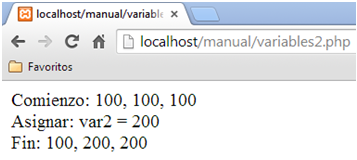

5. VARIABLES
- Los nombres de variable comienzan con el signo $ y son sensibles a mayúsculas y minúsculas.
- El nombre de la variable debe continuar por una letra o guión bajo, seguido de cualquier cantidad de letras, números y guiones.
- PHP es un lenguaje débilmente tipado, es decir, no es necesario definir el tipo antes de utilizar una variable.
- Las variables se declaran cuando se le asigna un valor.
Las variables también pueden declararse por referencia a otra variable.
Consiste en establecer un puntero, usando el símbolo ampersand “&“ al comienzo de la variable.
